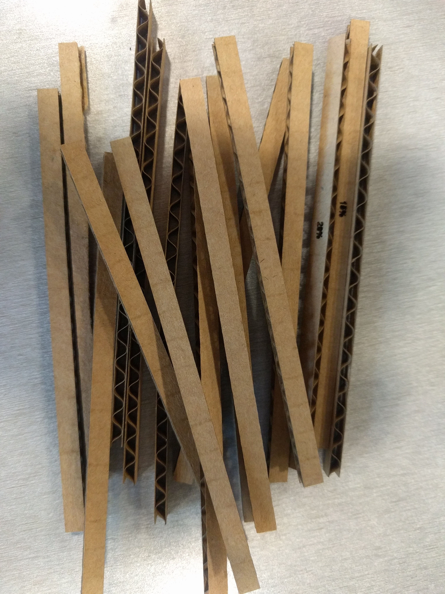
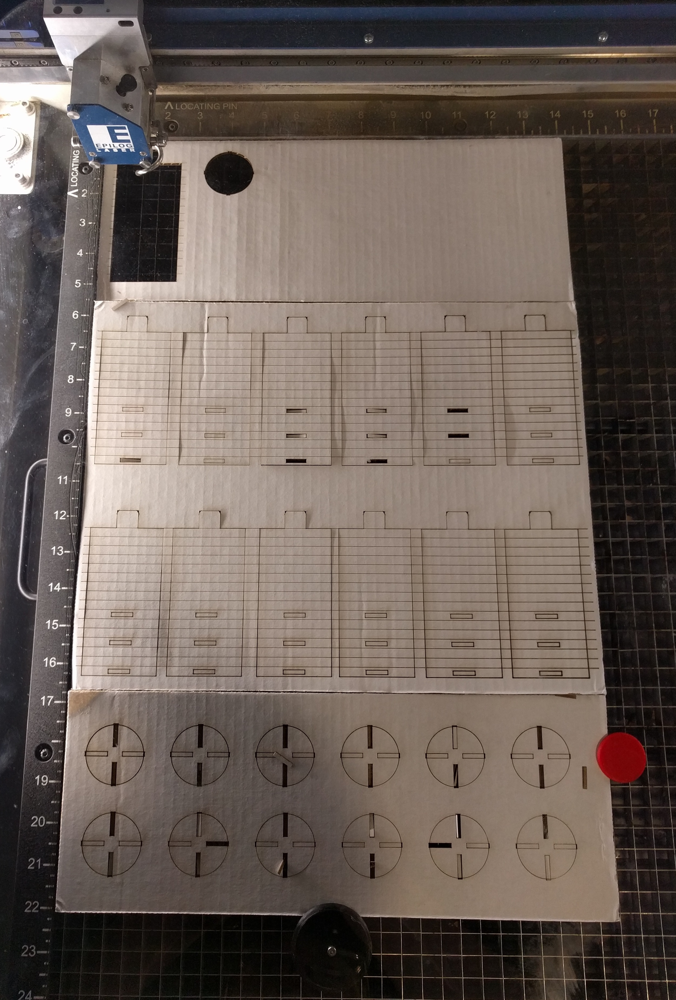

Colleen's Assignment 1!
My construction kit consists of two basic shapes: a scored rectangle with tabs and slots, and a circle with slots. I didn't see many curves in other construction kits online, so I wanted to see if I could make curved shapes and even flexible pieces. The scored rectangle allows you to create cyclinders at different diameters, while the circles allow you connect the pieces.

Prototyping
I started by prototyping with a utility knife. I tried many diffferent shapes, shown below. This allowed me to understand working with cardboard as a material, and helped me downselect the basic shapes I wanted.
Testing fit
Next I measured the width of my cardboard and made a gauge to test the fit of different tab and slot sizes, as well as the performance of different lasercutter settings for scoring the cardboard. I decided at this point that champfered tabs (60 degrees) were useful.

It was pretty tricky to get the scoring settings right. I tried a lot of different settings, most of which ended up cutting straight through the material and leaving me with a pile of little cardboard sticks, like below.
Once I had a general idea of the settings that worked, I create a scoring gauge that had horizontal lines split into four sections, each with different power settings. I could then bend the cardboard to see which settings had the best results. What worked best in this case was Speed: 25%, Power: 18%, Frequency 10%.

Sample Shapes
With the fit figured out, I created a file to cut out my chosen shapes at a couple different sizes.

This allowed me to make sure that the shape would cut right before cutting several of them, and I decided on the final parameters of the shapes I wanted.
Final Cut
Finally, I cut out 12 of the scored rectangles and circles. I used a 14 x 22 poster display board.
You can find the illustrator file below. It includes a couple of test prints at the top and is layered so that you can print these first to make sure everything is ok and then print the rest of them. The black lines (0, 0, 0) are for through-cuts and red (255, 0, 0) are for scores, so you can use color-mapping to print them out at different power settings.

Construction Possibilities: Moving Parts!
One thing I found cool about the scored pieces was that they allowed for several different sizes of cylinders. In the set I made, the smallest possible cylinder fits inside the largest.
This allows you to make moving parts! For example, if you were to make a castle, you could now add aworking drawbridge to it, like below.
Oh the possibilities!